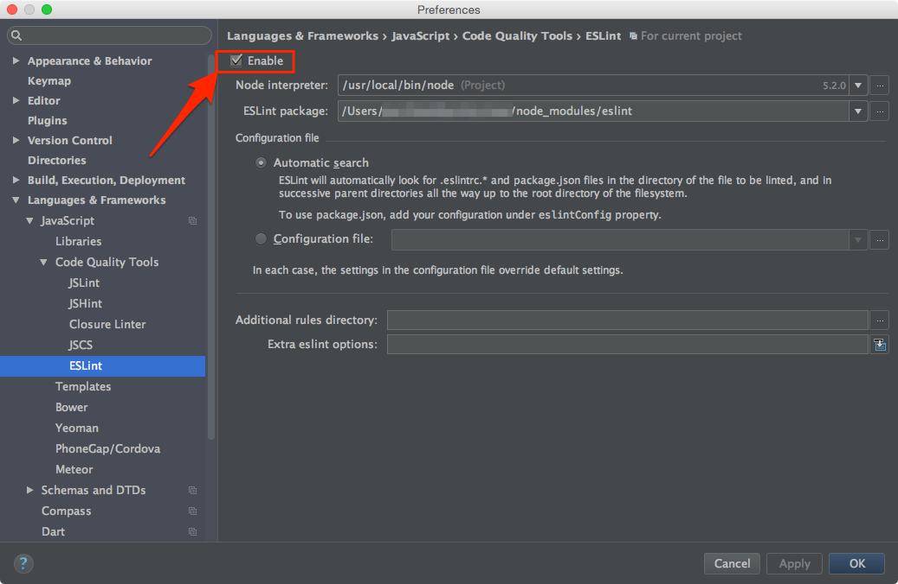

Frequently Asked Questions
Where are Babel and ESLint configured?
In package.json
Where are the files coming from when I run npm start?
In development Webpack compiles your application runs it in-memory. Only when
you run npm run build will it write to disk and preserve your bundled
application across computer restarts.
How do I fix Error: listen EADDRINUSE 127.0.0.1:3000?
This simply means that there's another process already listening on port 3000.
The fix is to kill the process and rerun npm start.
OS X / Linux:
Find the process id (PID):
ps aux | grep nodeThis will return the PID as the value following your username:
janedoe 29811 49.1 2.1 3394936 356956 s004 S+ 4:45pm 2:40.07 node serverNote: If nothing is listed, you can try
lsof -i tcp:3000Then run
kill -9 YOUR_PIDe.g. given the output from the example above,
YOUR_PIDis29811, hence that would mean you would runkill -9 29811
Windows
Find the process id (PID):
netstat -a -o -nThis will return a list of running processes and the ports they're listening on:
Proto Local Address Foreign Address State PID TCP 0.0.0.0:25 0.0.0.0:0 Listening 4196 ... TCP 0.0.0.0:3000 0.0.0.0:0 Listening 28344Then run
taskkill /F /PID YOUR_PIDe.g. given the output from the example above,
YOUR_PIDis28344, hence that would mean you would runtaskkill /F /PID 28344
Issue with local caching when running in production mode (F5 / ctrl+F5 / cmd+r weird behavior)
Your production site isn't working? You update the code and nothing changes? It drives you insane?
Quick fix on your local browser:
To fix it on your local browser, just do the following. (Suited when you're testing the production mode locally)
Chrome dev tools > Application > Clear Storage > Clear site data (Chrome)
Full in-depth explanation
Read more at https://github.com/NekR/offline-plugin/blob/master/docs/updates.md
Local webfonts not working for development
In development mode CSS sourcemaps require that styling is loaded by blob://, resulting in browsers resolving font files relative to the main document.
A way to use local webfonts in development mode is to add an absolute output.publicPath in webpack.dev.babel.js, with protocol.
// webpack.dev.babel.js
output: {
publicPath: 'http://127.0.0.1:3000/',
/* … */
},
Non-route containers
Note: Container will always be nested somewhere below a route. Even if there's dozens of components in between, somewhere up the tree will be route. (maybe only "/", but still a route)
Where do I put the reducer?
While you can include the reducer statically in reducers.js, we don't recommend this as you lose
the benefits of code splitting. Instead, add it as a composed reducer. This means that you
pass actions onward to a second reducer from a lower-level route reducer like so:
// Main route reducer
function myReducerOfRoute(state, action) {
switch (action.type) {
case SOME_OTHER_ACTION:
return someOtherReducer(state, action);
}
}
That way, you still get the code splitting at route level, but avoid having a static combineReducers
call that includes all of them by default.
See this and the following lesson of the egghead.io Redux course for more information about reducer composition!
How do I run the saga?
Since a container will always be within a route, one we can simply add it to the exported array in
sagas.js of the route container somewhere up the tree:
// /containers/SomeContainer/sagas.js
import { someOtherSagaFromNestedContainer } from './containers/SomeNestedContainer/sagas';
function* someSaga() { /* … */ }
export default [
someSaga,
someOtherSagaFromNestedContainer,
];
Or, if you have multiple sagas in the nested container:
// /containers/SomeContainer/sagas.js
import nestedContainerSagas from './containers/SomeNestedContainer/sagas';
function* someSaga() { /* … */ }
export default [
someSaga,
...nestedContainerSagas,
];
Using this boilerplate with WebStorm
WebStorm is a powerful IDE, and why not also use it as debugger tool? Here is the steps
- Install JetBrain Chrome Extension
- Setting up the PORT
- Change WebPack devtool config to
source-map(This line) - Run web server (
npm run start) - Create Run Configuration (Run > Edit Configurations)
- Add new
JavaScript Debug - Setting up URL
- Start Debug (Click the green bug button)
- Edit Run Configuration Again
- Mapping Url as below picture
- Map your
rootdirectory withwebpack://.(please note the last dot) - Map your
builddirectory with your root path (e.g.http://localhost:3000)
- Map your
- Hit OK and restart debugging session

Troubleshooting
- You miss the last
.(dot) inwebpack://. - The port debugger is listening tool and the JetBrain extension is mismatch.
Enable ESLint
ESLint help making all developer follow the same coding format. Please also setting up in your IDE, otherwise, you will fail ESLint test.
- Go to WebStorm Preference
- Search for
ESLint - Click
Enable

Use CI with bitbucket pipelines
Your project is on bitbucket? Take advantage of the pipelines feature (Continuous Integration) by creating a 'bitbucket-pipelines.yml' file at the root of the project and use the following code to automatically test your app at each commit:
image: gwhansscheuren/bitbucket-pipelines-node-chrome-firefox
pipelines:
default:
- step:
script:
- node --version
- npm --version
- npm install
- npm test
I'm using Node v0.12 and the server doesn't work?
We settled on supporting the last three major Node.js versions for the boilerplate – at the moment of this writing those are v4, v5 and v6. We highly recommend upgrading to a newer Node.js version!
If you have to use Node.js 0.12, you can hack around the server not running by using babel-cli to
run the server: npm install babel-cli, and then replace all instances of node server in the "scripts"
in the package.json with babel server!
Have another question?
Submit an issue, hop onto the Gitter channel or contact Max direct on twitter!